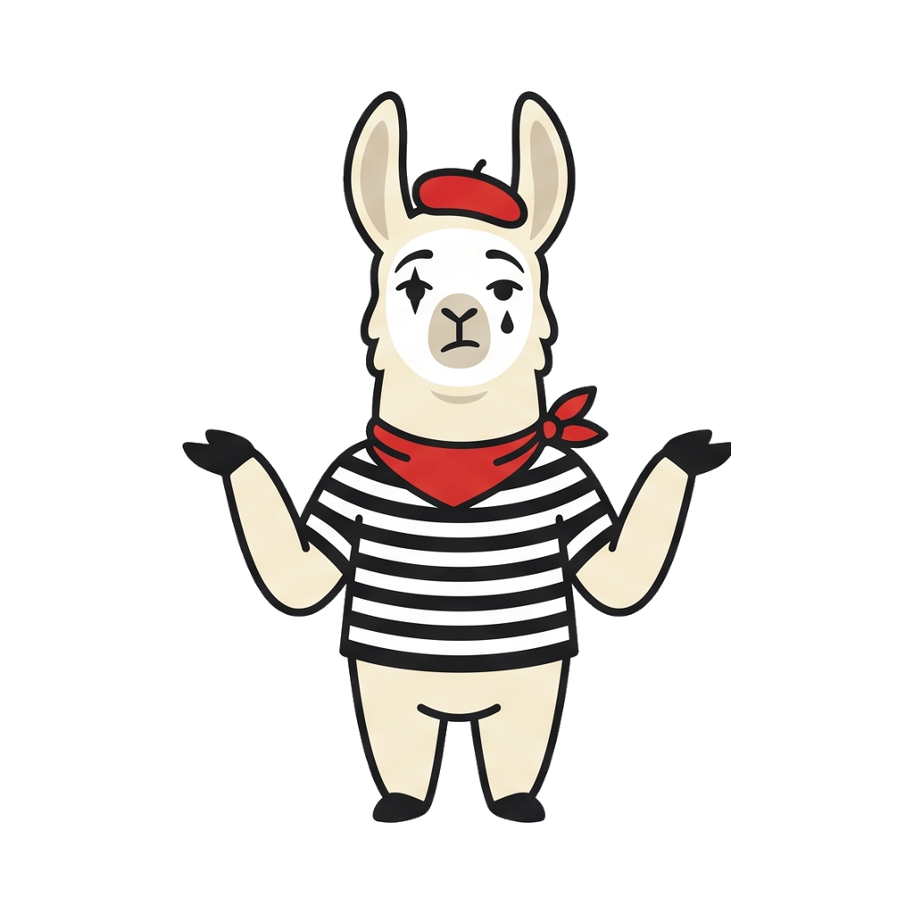

A zero-dependency server that impersonates the Anthropic API in front of your local Ollama — so Claude Code runs free on your own hardware, with a live dashboard and a menu bar app to run the show.
Everything is plain Node and native apps — no frameworks, no npm install, nothing to babysit.
Point Claude Code at FauxClaude and it runs against your Ollama model — streaming, tool use, token counting, the whole Messages API surface. Your claude.ai login and paid sessions stay untouched.
A SwiftUI menu bar llama on macOS and a WinForms tray app on Windows. Start, stop, flip modes, open the dashboard, or launch a wired-up Claude Code terminal in one click.
Every request streams onto a live table — status, model routing, token counts, duration. Click a row for the full message and response.
An all-time counter prices your local traffic at real API rates, per requested model. Watch the dollars you didn't spend pile up.
No Ollama? No problem. Mock mode streams deterministic responses with configurable pacing — perfect for hammering a Claude frontend with zero token cost.
Map Claude model tiers to different local models — Opus requests to your big coder, Haiku requests to a 3B. Pull or delete Ollama models any time; no restart needed.
Three moves on a Mac. Windows works the same via the tray app.
# get it git clone https://github.com/garthvh/fauxclaude && cd fauxclaude # install Ollama as a background app, then a model with tool support brew install --cask ollama && open -a Ollama ollama pull qwen2.5-coder:14b # build the mac app once, then launch it from the menu bar forever ./mac-app/build-app.sh && open FauxClaude.app # or skip the app and go manual node server.mjs & ANTHROPIC_BASE_URL=http://127.0.0.1:11435 claude